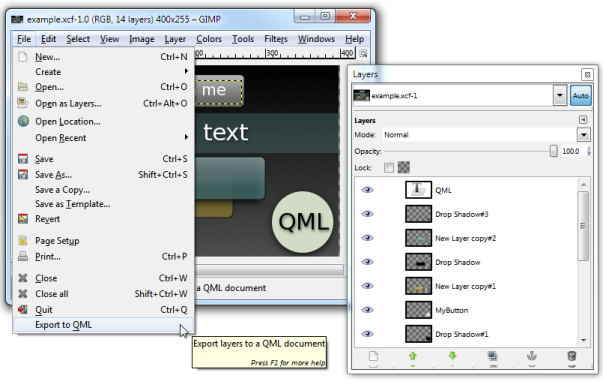

Exporting Designs from Graphics Software
You can export designs from graphics software, such as Adobe Photoshop and GIMP, to QML files.
Exporting from Adobe Photoshop to QML
You can use a QML Asset Exporter to export designs from Adobe Photoshop to .ui.qml files. The QML Asset Exporter provides templates that are based on the PNG EXPRESS plugin for Photoshop. They enable you to export PSD files to QML format, so that each PSD file is converted into an .ui.qml file.
The filename of the generated document is based on the name of the PSD file. Tagged image and text objects are exported with absolute positioning. Text objects are exported with font and alignment information.
For more information, see the QML Asset Exporter documentation.
Exporting from GIMP to QML

Each scene is converted into a single QML file with an Image or a Text item for each layer and saved on the development PC. Each layer is exported as an item.
You can open the QML file in Qt Creator for editing. By default, the export scripts generate Qt Quick 1 files. To edit the files in the Design mode, change the import statements in the export scripts to import Qt Quick 2. Or, you can change the import statement in each file after generating the files.
Conversion Rules
The following rules apply to the conversions:
- Layer names are used as item names. Spaces and hash marks (#) are replaced with underscore characters to create valid ids for the items.
- Layer styles, such as drop shadows, are converted to images.
- Offset, size, ordering and opacity are preserved.
- Text layers are converted to Text items, unless you specify that they be converted to Image items.
- Hidden layers can be exported, and their visibility is set to hidden.
- PNG images are copied to the images subirectory.
Preparing Files for Conversion
To create QML files that are easy to use, prepare the GIMP designs for exporting, as follows:
- To minimize the number of items, minimize the number of layers, because each layer or is exported as a Text or Image item.
- To determine that some layers are not exported, hide them, and deselect the Export hidden check box during exporting.
- To make it easier to find the layers after exporting them, use descriptive names for them.
- To make sure that image dimensions are preserved during export, create at least one fully filled layer (which can be hidden), such as a background layer. If the export script does not find a fully filled layer, it resizes all images to the size of the canvas.
- To prevent errors during export, make sure that the layers are not locked. Locked layers cannot be exported.
- To avoid unexpected results, do not use Blending Mode effects. They are not exported.
Running the Export Script
The script has been tested to work on GIMP 2. You can download GIMP 2 from GIMP Downloads.
- Clone the repository that contains the export script, qmlexporter.py, from Qt Code Review.
Note: Read the INSTALL.txt in the repository for latest information about the script.
- Copy the export script to the plug-ins directory in the GIMP installation directory.
- Check the properties of the file to make sure that it is executable.
On Linux, run the following command:
chmod u+rx - To generate QML files that you can edit in the Design mode, edit the import statement in qmlexporter.py. For example:
f.write('import QtQuick 2.5\n')
- Restart GIMP to have the export command added to the File menu.
- Choose File > Export to QML to export the design to a QML file.
- In the Export Layers to a QML Document dialog, enter a name and location for the QML file, and click Export.
The QML file is saved to the location that you specified. In Qt Creator, choose File > Open File or Project to open the QML file.
Note: Existing files are replaced without warning.